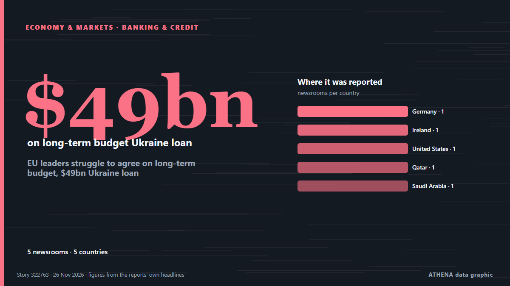

Économie, finance et marchés
SponsoriséPrésenté par  Cybernetics and Artificial Intelligence Lab Welcome to the Cybernetics and Artificial Intelligence Laboratory, established at the Department of Business Administration of the National and Kapodistrian University of Athens. The lab is headed by Professor Dimitrios Thomakos. The lab aims to do research that can be published in top venues. Our research uses tools and methods of Artificial Intelligence, and lies in the following areas: - Forecasting - Decision making - Cyber security - Finance We are always looking forward to collaborating with exceptional students!
Cybernetics and Artificial Intelligence Lab Welcome to the Cybernetics and Artificial Intelligence Laboratory, established at the Department of Business Administration of the National and Kapodistrian University of Athens. The lab is headed by Professor Dimitrios Thomakos. The lab aims to do research that can be published in top venues. Our research uses tools and methods of Artificial Intelligence, and lies in the following areas: - Forecasting - Decision making - Cyber security - Finance We are always looking forward to collaborating with exceptional students!
Les titres sont affichés en anglais, tels que publiés.
Veille des marchés - chiffres officiels
Dans quel sens évoluent les indicateurs officiels des marchés - hausse, baisse ou stabilité - avec la dernière valeur officielle et sa date, et l'actualité des marchés vérifiée par ATHENA. Valeurs officielles, pas des cours en temps réel.
Énergie
| 1 jour | 1 semaine | 1 mois | Valeur officielle | |
|---|---|---|---|---|
| Brent crude | ▲ | ▼ | ▼ | $91,80/bblDonnées officielles du 24 nov. 2026 |
| WTI crude | ▲ | ▼ | ▼ | $82,24/bblDonnées officielles du 24 nov. 2026 |
| US natural gas (Henry Hub) | ▲ | ▲ | ▲ | $3,30/MMBtuDonnées officielles du 24 nov. 2026 |
| European natural gas (1 mois · 3 mois · 12 mois)(1M · 3M · 12M) | ▲ | ▲ | ▲ | $25,49/MMBtuDonnées officielles du 1 sept. 2026 |
| Coal (Australia) (1 mois · 3 mois · 12 mois)(1M · 3M · 12M) | ▲ | ▲ | ▲ | $153,84/tDonnées officielles du 1 sept. 2026 |
Alimentation
| 1 mois | 3 mois | 12 mois | Valeur officielle | |
|---|---|---|---|---|
| Wheat | ▲ | ▲ | ▲ | $246,85/tDonnées officielles du 1 sept. 2026 |
Bourses américaines
| 1 jour | 1 semaine | 1 mois | Valeur officielle | |
|---|---|---|---|---|
| S&P 500 | ▼ | ▼ | ▼ | Direction seulement (indice © Cboe)Données officielles du 24 nov. 2026 |
| Nasdaq Composite | ▼ | ▼ | ▼ | Direction seulement (indice © Cboe)Données officielles du 25 nov. 2026 |
Taux, risque et dollar
| 1 jour | 1 semaine | 1 mois | Valeur officielle | |
|---|---|---|---|---|
| US 10-year Treasury yield | ▼ | ▼ | ▼ | 4,91 %Données officielles du 24 nov. 2026 |
| Market volatility (VIX) | ▼ | ▼ | ▲ | Direction seulement (indice © Cboe)Données officielles du 26 nov. 2026 |
| US dollar, broad index | ▬ | ▲ | ▲ | 123,60Données officielles du 20 nov. 2026 |
L'euro face aux autres monnaies
| 1 jour | 1 semaine | 1 mois | Valeur officielle | |
|---|---|---|---|---|
| EUR/USD | ▼ | ▼ | ▼ | 1,0957 USDDonnées officielles du 27 nov. 2026 |
| EUR/GBP | ▼ | ▼ | ▬ | 0,8350 GBPDonnées officielles du 27 nov. 2026 |
| EUR/CHF | ▬ | ▼ | ▼ | 0,9157 CHFDonnées officielles du 27 nov. 2026 |
| EUR/JPY | ▬ | ▲ | ▼ | 174,81 JPYDonnées officielles du 27 nov. 2026 |
| EUR/CNY | ▼ | ▼ | ▼ | 7,2912 CNYDonnées officielles du 27 nov. 2026 |
| EUR/TRY | ▬ | ▲ | ▲ | 55,647 TRYDonnées officielles du 27 nov. 2026 |
| EUR/NOK | ▼ | ▼ | ▲ | 10,6850 NOKDonnées officielles du 27 nov. 2026 |
Sources : Energy Information Administration des États-Unis (pétrole, gaz américain), FMI (gaz européen, charbon, blé), Trésor et Réserve fédérale des États-Unis (taux à 10 ans, indice du dollar) Cboe (VIX), S&P Dow Jones Indices (S&P 500) et Nasdaq (Nasdaq Composite), via FRED (Réserve fédérale de Saint-Louis) ; taux de référence de l'euro © Banque centrale européenne. Les chiffres sont les dernières valeurs officielles avec leur date, pas des cours en temps réel. Les directions sont calculées par ATHENA.
Crypto, ETF et actions dans l'actualité
- Miners support FTSE 100 as Wall Street rebounds Risque 1.5 27 nov.
- Bitcoin price drops below $59K as Anthropic joins tech stock rebound Risque 0.8 27 nov.
- Binance lifts withdrawal suspension after $6.3 billion crypto heist Risque 3.5 27 nov.
- What’s open and closed on Black Friday 2026? Stocks, banks, mail, Walmart, Costco, and more Risque 0.0 27 nov.
- JPMorgan says bitcoin ‘capitulation’ signaled by Strategy’s record-low NAV multiple Risque 0.9 27 nov.
- Musk pledges two SpaceX shares for every US child Risque 1.7 27 nov.
- Dangote Refinery shares to list on NGX December 1 after SEC approval Risque 0.0 27 nov.
- PSX: stocks slip lower, KSE-100 down over 300 points Risque 0.7 27 nov.
- Tata Steel shares rise 1%, APL Apollo falls 9% as brokerages turn cautious on ₹28,000 cr deal Risque 1.2 27 nov.
- Euro zone bond yields rise as stocks bounce Risque 0.9 27 nov.

Banques et créditEU leaders struggle to agree on long-term budget, $49bn Ukraine loan
The bloc is holding an extraordinary summit in Brussels to discuss its budget proposal for 2028 to 2034. de Al Jazeera English
| 14 nov. | 39 |
|---|---|
| 15 nov. | 64 |
| 16 nov. | 132 |
| 17 nov. | 101 |
| 18 nov. | 105 |
| 19 nov. | 109 |
| 20 nov. | 79 |
| 21 nov. | 38 |
| 22 nov. | 46 |
| 23 nov. | 117 |
| 24 nov. | 101 |
| 25 nov. | 92 |
| 26 nov. | 90 |
| 27 nov. | 32 |
Binance lifts withdrawal suspension after $6.3 billion crypto heist
The crypto platform added that a small number of networks are temporarily paused while they undergo maintenance or planned upgrades, separate from its completed recovery work. de The Hindu BusinessLine
Malaysia wants priority over other lenders if it backs AirAsia
Officials say they are assessing ways to provide support without risking public funds. de The Business Times
EU restrictions on inverters could cut European solar deployment by up to 6%, says Wood Mackenzie
Wood Mackenzie expects EU funding restrictions on projects using inverters from high-risk suppliers to reduce cumulative solar and energy storage installations across the bloc by 3% between 2027 and… de pv magazine
Argentina bans its central bank from printing money for the government
The new charter bars the bank from lending to any level of government or otherwise financing the Treasury. de The Straits Times
EU leaders aim for budget deal before the end of the year, Merz says
BRUSSELS, Nov 26 - EU leaders will try to reach an agreement on the next long term budget for the EU this year, but will not reconvene for new talks on Friday, German chancellor Friedrich Merz said… de The Straits Times
Gold rebounds from one-year low as AI jitters ease
Gold prices rose Friday, rebounding from a more-than-one-year low touched earlier this week as a US holiday lull calmed AI-driven market jitters and eased selling pressure on bullion. de MyJoyOnline
Dangote Refinery shares to list on NGX December 1 after SEC approval
Stockbroker projects improved market liquidity after Dangote Refinery IPO allotment By Taiye Olayemi A stockbroker, Mr David Adonri, has projected improved liquidity in the Nigerian equities market… de News Agency of Nigeria
Costa Rica bars entry to UN rapporteur over 'links to terrorist acts'
Costa Rica's government said Thursday it had denied entry to UN rapporteur Francesca Albanese, who has accused Israel of genocide, because she was the subject of an "international alert over links to… de RFI English
Settlers smash foundations of Palestinian family's homes in West Bank
JALOUD, West Bank, Nov 26 - Militant Israeli settlers smashed the foundations of two homes belonging to a Palestinian family in the West Bank on Thursday, after settler attacks prevented the family… de The Straits Times
Merz: EU leaders fail to reach agreement on next seven-year budget
A European diplomatic source said that the officials will continue the negotiations in December. de TASS (English)
Thailand’s Loy Krathong Festival lights up Chiang Mai
Thousands of Thai residents and international visitors gathered along the banks of the Ping River in northern Thailand’s Chiang Mai on Tuesday to celebrate Loy Krathong, the country’s traditional… de DVB English
Trump demands probe into ‘fake’ US GDP figures
President Donald Trump called Thursday for an investigation into a routine revision of economic growth figures as he pushed his groundless claims of interference in the US midterm elections. de Vanguard
BOJ calls for safeguards against digital money, AI risks
The growing use of AI also brings fresh cybersecurity threats. de The Business Times
EUR/USD might be bottoming out amid peak Fed hawkishness and dovish repricing risks
USD: The US dollar has found support recently from a hawkish repricing in interest rate expectations following Governor Waller’s remarks, in which he even floated the possibility of a larger 50 bps… de investingLive (ForexLive)
'Significant concern' as summer bushfire risk grows
Fire risk is heightened across several states as the long-range forecast predicts a hot, dry summer for most. de ABC News Australia
On Greece's most glamorous island, faith and tradition endure with a celebration of its women
MYKONOS, Greece (AP) — Long before the cruise ships arrived, Mykonos was run by its poor and iron-willed women. de The National Herald
Two in, two out in Macquarie management shake-up
Macquarie is making changes to its top executive team only three weeks after Greg Ward took over as chief executive. de Australian Financial Review
Police use tear gas to disperse fresh Bangladesh garment worker protests
DHAKA: Bangladesh police said they fired tear gas shells and used sound grenades to disperse protesting garment workers who tried to block a major highway on Thursday to press their demand for better… de New Straits Times
Cards overtake cash at eurozone points of sale – ECB report
People still value hard currency and having different payment options, bank’s annual survey finds. de Central Banking
EU leaders divided over budget spending as they weigh a $49 billion loan to Ukraine
Bulgaria, the Czech Republic, Hungary and Slovakia oppose using funds for military aid to Kyiv. de Courthouse News
Bangladesh raises minimum wage for garment workers after weeks of protests
A government-formed wage board in Bangladesh has raised the minimum monthly wage for entry-level garment workers by 36% to 17,000 takas, or $136, from 12,500 takas after weeks of violent protests. de ABC News (International)
Tommy Robinson’s ex-wife avoids jail for failing to provide loan records
Jenna Lennon, 41, pleaded guilty to one charge of failing to deliver up books and records about her company Hope & Pride Limited. de The Irish News (Belfast)
French village tackles depopulation with near-free plots of land
France's rural communities are emptying out, but in the village of Parlan, hundreds of new residents have put down roots, drawn by the promise of virtually free land. de VnExpress International
Japanese Yen holds gains as BoJ policymaker signals chance of faster-pace rate hikes
The USD/JPY pair trades with mild losses around 159.20 during the early European trading hours on Thursday. de FXStreet
‘Here I am’: Lookout circular issued, CJP’s Abhijit Dipke rallies in Nagpur anyway
Dipke said he wanted to honour Dr Babasaheb Ambedkar, whose Constitution, he said, guides the country. de Hindustan Times
S&P warns Nvidia’s board may be compromised, puts chipmaker’s rating on downgrade watch
S&P Global Ratings placed Nvidia's credit rating on watch for a possible downgrade on Wednesday, saying the departure and subsequent reinstatement of its CEO had exposed weaknesses in the… de MyJoyOnline
New York court upholds Mayor Mamdani’s rent freeze
The New York state Supreme Court on Wednesday upheld New York City Mayor Zohran Mamdani's rent freeze for nearly half of the city's rental units and denied a petition filed by a group of landlords. de MyJoyOnline
Bank of Korea hikes rate to 3.25% against backdrop of strong economy
Intermodal marketing companies and railroads are using ongoing bid negotiations to raise rates in annual agreements for 2027. de The Journal of Commerce (JOC)
Leaders wrestle over EU’s budget, Ukraine financing, as Le Pen focuses minds
European Union leaders were wrestling over the bloc’s nearly €1.6 trillion ($1.76 trillion) budget proposal for 2028 to 2034 and financing for Ukraine at a summit on Thursday, seeking to narrow… de Cyprus Mail
PM Describes European Commission's Opinion on Bulgaria's Excessive Deficit Response as "Stinging Rebuke"
Bulgaria will not meet the European Commission's requirements for bringing its budget deficit below 3% of gross domestic product this year, Minister for EU Funds Atanas Pekanov said, adding that the… de Novinite
Dubai Islamic Bank to buy Emirates Islamic in all-share deal
Dubai Islamic Bank (DIB) has agreed to acquire Emirates Islamic Bank from Emirates NBD in an all-share transaction that would create the UAE’s largest Islamic banking group, the two lenders announced… de Khaleej Times (working feed)
Oil prices exceed $92 on global commodity markets
Retail fuel prices in Cambodia fell again yesterday following a decline in international oil markets, according to the Ministry of Commerce. de Khmer Times
Hong Kong home prices ease in October as recovery loses steam
The housing market has lost momentum amid a stock market correction. de The Business Times